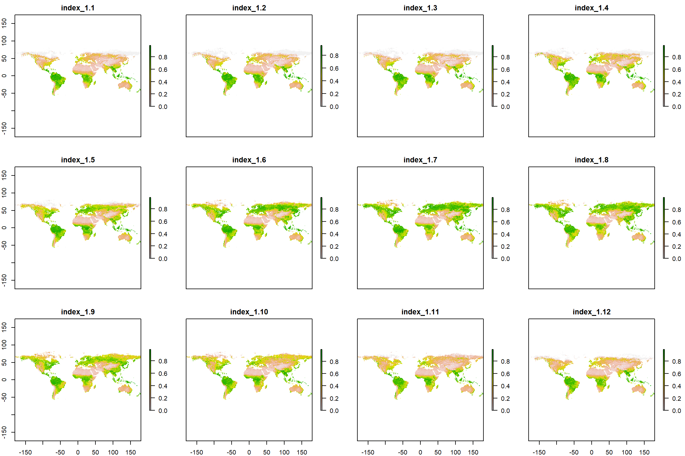
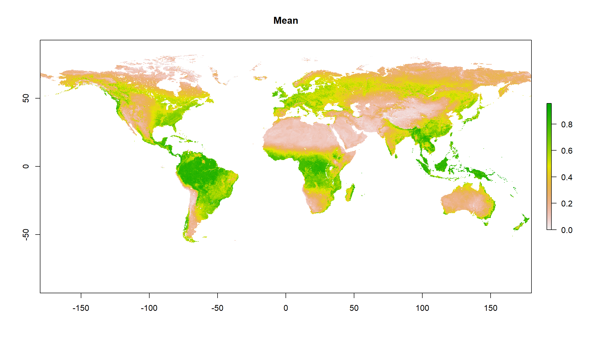
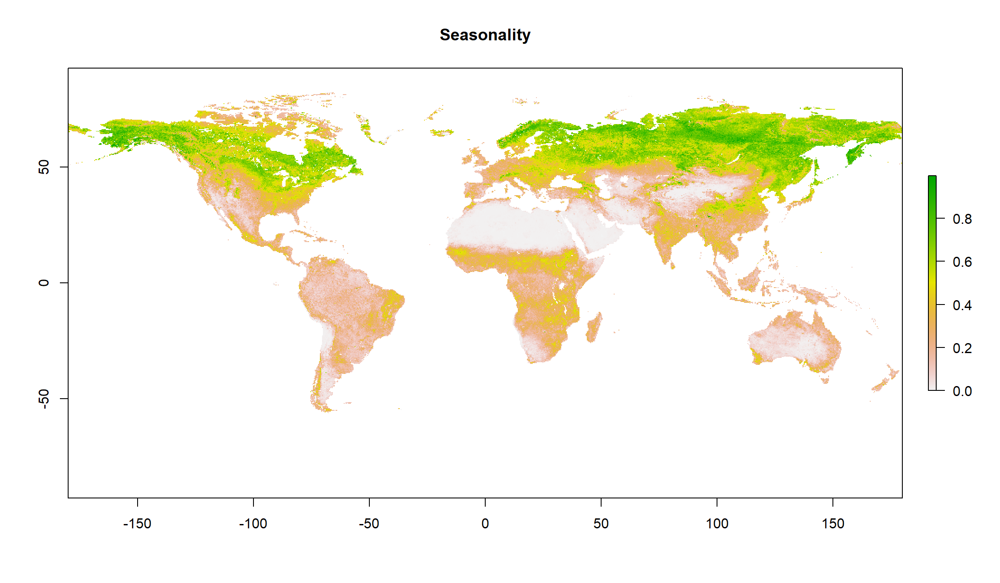
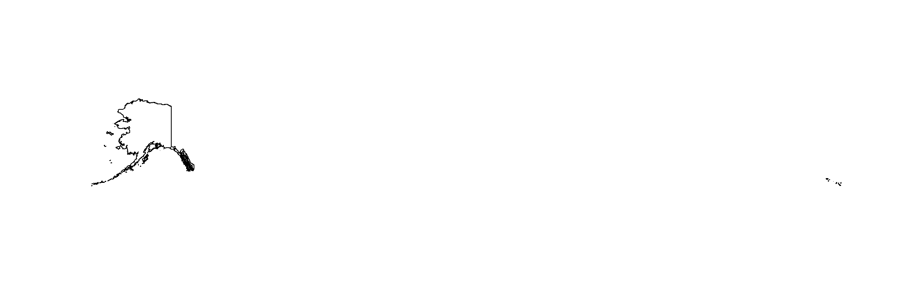
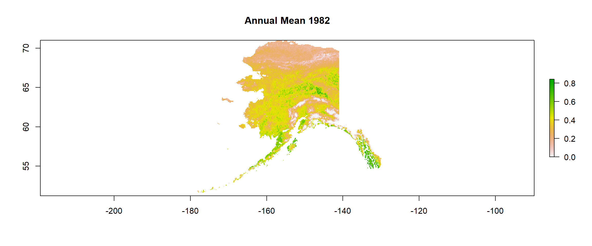
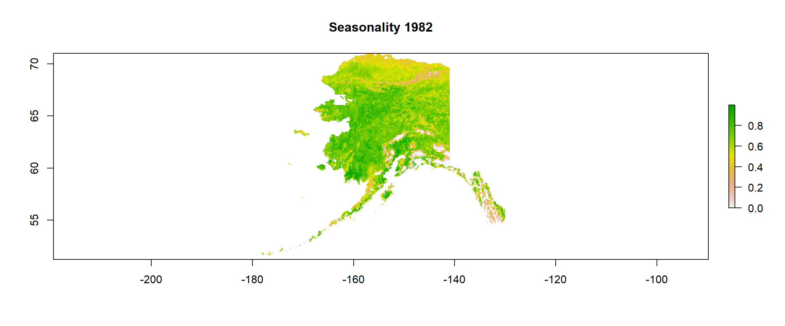

Preparing The Work
First of all, most .R scripts will follow the same kind of structure:
Head
The Head is used as an information statement at the top of your code document that informs the user of the contents, author, and (sometimes) date of the last edit on said document. This is highly useful when you are intending to give your document to other people at some point. The head for our analysis might look something like this:
# ####################################################################### #
# PROJECT: [BFTP] Identifying Biomes And Their Shifts Using Remote Sensing
# CONTENTS: Functionality to download, aggregate, and crop/mask NDVI data
# AUTHOR: Erik Kusch
# EDIT: 09/03/20
# ####################################################################### #
Preamble
The Preamble is where you set up the most important parameters/guidelines for your coding script. Personally, I highly recommend to make your first line in the preamble read rm(list=ls()). This nifty line of code clears your entire working environment in R meaning that you work from a clean slate thus eliminating all possible interference of previous work. If your code works as intended after this line, it means that your project is internally consistent and self-contained which makes your analysis reproducible (we want that!).
Afterwards, I like to establish a directory (i.e. “folder”) structure. After all, no one likes a cluttered folder on their hard drive.Therefore, we identify our current working directory (wd) with getwd() and save it as an object in R which we call Dir.Base. This is the folder in which our document is located and where R is looking for and saving files to. We don’t want to dump everything there. Conclusively, we need to create our own folders within our project folder. We would like to call these folders “Data” and “Plots” (the purpose of these folders should be obvious from their names). To actually create these folders on your hard drive, we must first establish the folder paths. We do so by using the paste() command in R which combines objects and writes the sep argument between the combined objects. Here, we take the path to our project folder (Dir.Base ) and combine it with the name of the folder we want (e.g. “Data”) while using the backslash ("/") between these two objects as it indicates the jump in a folder hierarchy. The folder is then created using the dir.create() function.
Our preamble then looks like this:
rm(list=ls()) # clearing the entire environment
Dir.Base <- getwd() # identifying the current directory
Dir.Data <- paste(Dir.Base, "Data", sep="/") # generating the folder path for data folder
dir.create(Dir.Data) # creating the data folder
Dir.Plots <- paste(Dir.Base, "Plots", sep="/") # generating the folder path for figures folder
dir.create(Dir.Plots) # creating the figures folder
Usually, this is also where we load packages for more functionality of our analyses. However, this time, we will do so when they are necessary to give you a better overview and explanation what they do.
Coding
All of the important Coding happens after the head and the preamble are written and run in R. Basically, this is the rest of this document.
Downloading NDVI Data
First of all, we need to download the NDVI data that we are interested in. One particularly useful repository for this is the Global Inventory Modelling and Mapping Studies (GIMMS) 3g v.1 data set obtained via the Advanced Very High Resolution Radiometer (AVHRR). This time series goes back all the way to January 1982 and contains bi-weekly, global projects of NDVI values.
Packages
Firstly, we need some packages:
gimmsis a package which enables us to download the GIMMS 3g v.1 data set directly throughRrasteris a package which allows us to establish, handle, and save spatial gridded products of any variable we want (NDVI in this case)
We install and load our packages as follows:
install.packages("gimms") # for GIMMS NDVI data download
library(gimms)
install.packages("raster") # for spatial raster format
library(raster)
Downloading
Let’s download the GIMMS 3g v.1 NDVI data for the entire year of 1982:
gimms_files <- downloadGimms(x = as.Date("1982-01-01"), # download from January 1982
y = as.Date("1982-12-31"), # download to December 1982
dsn = Dir.Data, # save downloads in data folder
quiet = FALSE # show download progress
)
Now, we want to turn our downloaded data into a raster so we can do spatial analyses with it:
gimms_raster <- rasterizeGimms(x = gimms_files, # the data we rasterize
remove_header = TRUE # we don't need the header of the data
)
gimms_raster # some information about the raster stack we created here
## class : RasterStack
## dimensions : 2160, 4320, 9331200, 24 (nrow, ncol, ncell, nlayers)
## resolution : 0.083, 0.083 (x, y)
## extent : -180, 180, -90, 90 (xmin, xmax, ymin, ymax)
## crs : +proj=longlat +datum=WGS84 +no_defs
## names : ndvi.1.1, ndvi.2.1, ndvi.3.1, ndvi.4.1, ndvi.5.1, ndvi.6.1, ndvi.7.1, ndvi.8.1, ndvi.9.1, ndvi.10.1, ndvi.11.1, ndvi.12.1, ndvi.1.2, ndvi.2.2, ndvi.3.2, ...
## min values : -0.3, -0.3, -0.3, -0.3, -0.3, -0.3, -0.3, -0.3, -0.3, -0.3, -0.3, -0.3, -0.3, -0.3, -0.3, ...
## max values : 0.99, 0.99, 1.00, 0.99, 0.99, 0.99, 1.00, 1.00, 0.99, 0.99, 1.00, 1.00, 1.00, 1.00, 1.00, ...
Here, you can see that we have successfully created a RasterStack with 24 layers (two for each month because measurements were bi-weekly), for the entire earth (extent of -180, 180, -90, 90). We can also see that there are some values below 0 which we don’t expect for the NDVI and we will fix this in a second. For now, just notice that we have successfully downloaded the data.
Aggregating NDVI Data
With our data successfully downloaded, it is now time to prepare the data further for our analysis.
Composites
Firstly, we want to deal with monthly NDVI values. To do so, we want to build monthly maximum composites. Luckily, the gimms package has just the right option for us:
indices <- monthlyIndices(gimms_files) # generate month indices from the data
gimms_raster_mvc <- monthlyComposite(gimms_raster, # the data
indices = indices # the indices
)
gimms_raster_mvc # some information about our monthly composite raster stack
## class : RasterStack
## dimensions : 2160, 4320, 9331200, 12 (nrow, ncol, ncell, nlayers)
## resolution : 0.083, 0.083 (x, y)
## extent : -180, 180, -90, 90 (xmin, xmax, ymin, ymax)
## crs : +proj=longlat +datum=WGS84 +no_defs
## names : index_1.1, index_1.2, index_1.3, index_1.4, index_1.5, index_1.6, index_1.7, index_1.8, index_1.9, index_1.10, index_1.11, index_1.12
## min values : -0.30, -0.30, -0.30, -0.29, -0.30, -0.30, -0.30, -0.30, -0.30, -0.30, -0.30, -0.30
## max values : 0.99, 1.00, 0.99, 1.00, 0.99, 1.00, 1.00, 1.00, 1.00, 1.00, 0.99, 0.99
As you can see above, our new raster stack has the same dimensions, resolution, coordinate reference system (crs), and extent as the previous one. However, we have reduced the number of layers to 12 (one for each month).
Since there are still negative values present (an artifact of how NASA stores the data or cloud cover), we simply set these to 0:
Negatives <- which(values(gimms_raster_mvc) < 0) # identify all negative values
values(gimms_raster_mvc)[Negatives] <- 0 # set threshold for barren land (NDVI<0)
gimms_raster_mvc
## class : RasterBrick
## dimensions : 2160, 4320, 9331200, 12 (nrow, ncol, ncell, nlayers)
## resolution : 0.083, 0.083 (x, y)
## extent : -180, 180, -90, 90 (xmin, xmax, ymin, ymax)
## crs : +proj=longlat +datum=WGS84 +no_defs
## source : memory
## names : index_1.1, index_1.2, index_1.3, index_1.4, index_1.5, index_1.6, index_1.7, index_1.8, index_1.9, index_1.10, index_1.11, index_1.12
## min values : 0, 0, 0, 0, 0, 0, 0, 0, 0, 0, 0, 0
## max values : 0.99, 1.00, 0.99, 1.00, 0.99, 1.00, 1.00, 1.00, 1.00, 1.00, 0.99, 0.99
See how all of the min values are now on 0!
Lastly, we want to see what our data looks like (visual inspection is an important step to sanity check your work). We do so as follows:
plot(gimms_raster_mvc)

What a beautiful seasonal trend of greening we can observe (I’ll stop nerding out here before it get’s out of hand, don’t worry)!
Annual Values
Lastly, we may wish (and in fact, you will have to) aggregate our data to annual and even more-than-annual means and seasonality measures.
Mean Values
To establish annual mean values, we simply take the mean for each cell in our raster stack for all the layers as such:
gimms_annual <- calc(gimms_raster_mvc, # data from which to calculate
fun=mean, # function which to calculate with
na.rm = TRUE # ignore NAs
)
Seasonality Values
Measures of seasonality are defined as the span between the maximum value of a cell and the minimum value of the same cell. So, we calculate a maximum raster and a minimum raster and then simply subtract the minimum from the maximum as follows:
maxi <- calc(gimms_raster_mvc, fun=max)
mini <- calc(gimms_raster_mvc, fun=min)
gimms_seasonality <- maxi-mini
\pagebreak
Plots
Let’s have a look at our annual mean and seasonality:
plot(gimms_annual, main = "Mean")

plot(gimms_seasonality, main = "Seasonality")

Cropping NDVI Data
Our data is still on a global scale. We are only interested in data across Alaska, though. Let’s deal with that.
Packages & Data
Again, we have to install some packages and load them.
install.packages("sp") # for spatialpolygons format
library(sp)
install.packages("rgdal") # for shapefiles
library(rgdal)
Secondly, we require the actual shape files. Personally, I am a big fan of the Natural Earth Shape files (\url{http://www.naturalearthdata.com/downloads/10m-cultural-vectors/}) because of all the different shape files I can get there. Here, we are interested in states/provinces and so want to download the data from here: \url{https://www.naturalearthdata.com/http//www.naturalearthdata.com/download/10m/cultural/ne_10m_admin_1_states_provinces.zip}. Thankfully, Rlet’s us do the downloading as well as the unpacking of archived (.zip) data:
# Downloading
download.file("https://www.naturalearthdata.com/http//www.naturalearthdata.com/download/10m/cultural/ne_10m_admin_1_states_provinces.zip",
destfile = paste(Dir.Data, "Shapes.zip", sep="/")) # destination file
# Unzipping
unzip(paste(Dir.Data, "Shapes.zip", sep="/"), # which file to unzip
exdir = Dir.Data) # where to unzip to
Finally, we want to load our shape files into R. We do this using the readOGR() function in R:
Shapes <- readOGR(Dir.Data, # where to look for the file
"ne_10m_admin_1_states_provinces", # the file name
verbose = FALSE) # we don't want an overview of the loaded data
Crop & Mask
Now, we are ready to use our shape file for Alaska. First, we have to find out which of our shape files is for Alaska:
Position <- which(Shapes$name_en == "Alaska") # find the english name that's "Alaska" in our shapefiles
Alaska_Shp <- Shapes[Position,] # extract the Alaska shapefile
plot(Alaska_Shp) # plot it for inspection
 We really don’t care much about that island chain all the way to the right in our plot.
This is likely to be an extent-caused issue and we should crop our shape file extent to the easternmost point of Alaska on the continent:
extent(Alaska_Shp) # extent clearly shows the super-eastern coordinates
## class : Extent
## xmin : -179
## xmax : 180
## ymin : 51
## ymax : 71
# Crop
Alaska_Shp <- crop(Alaska_Shp, # what to crop
extent(-190, -130, 51, 71)) # which extent to crop to
plot(Alaska_Shp) # visualising the cropped product
Lovely. That resolved the issue. We are ready for final cropping of our data and saving of the cropped data.
Mean Values
Let’s deal with the annual mean for 1982:
# Crop
gimms_annual <- crop(gimms_annual, # mean annual data
extent(Alaska_Shp)) # cropped Alaska extent
# Mask (this keeps only cells that fall into our shapefile)
gimms_annual <- mask(gimms_annual, # cropped annual means
Alaska_Shp) # cropped Alaska shapefile
plot(gimms_annual, main ="Annual Mean 1982") # inspection time!

# Save data
writeRaster(x = gimms_annual, # which raster to save
file = paste(Dir.Data, "1982Mean", sep="/"), # which file to save to
format = "CDF", overwrite = TRUE) # which format to use and whether to overwrite
## class : RasterLayer
## dimensions : 237, 590, 139830 (nrow, ncol, ncell)
## resolution : 0.083, 0.083 (x, y)
## extent : -179, -130, 51, 71 (xmin, xmax, ymin, ymax)
## crs : +proj=longlat +datum=WGS84 +no_defs
## source : 1982Mean.nc
## names : layer
## values : 0, 0.84 (min, max)
## zvar : layer
Seasonality Values
# Crop
gimms_seasonality <- crop(gimms_seasonality, # mean seasonality data
extent(Alaska_Shp)) # cropped Alaska extent
# Mask (this keeps only cells that fall into our shapefile)
gimms_seasonality <- mask(gimms_seasonality, # cropped seasonality data
Alaska_Shp) # cropped Alaska shapefile
plot(gimms_seasonality, main = "Seasonality 1982") # inspection time!

# Save data
writeRaster(x = gimms_seasonality, # which raster to save
file = paste(Dir.Data, "1982Season", sep="/"), # which file to save to
format = "CDF", overwrite = TRUE) # which format to use and whether to overwrite
## class : RasterLayer
## dimensions : 237, 590, 139830 (nrow, ncol, ncell)
## resolution : 0.083, 0.083 (x, y)
## extent : -179, -130, 51, 71 (xmin, xmax, ymin, ymax)
## crs : +proj=longlat +datum=WGS84 +no_defs
## source : 1982Season.nc
## names : layer
## values : 0, 1 (min, max)
## zvar : layer